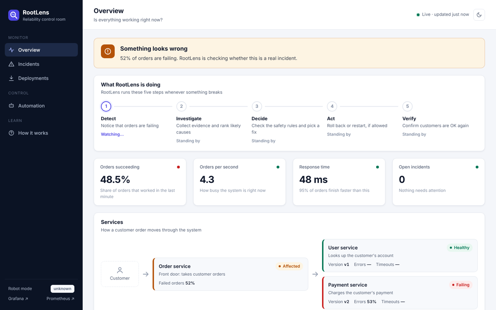
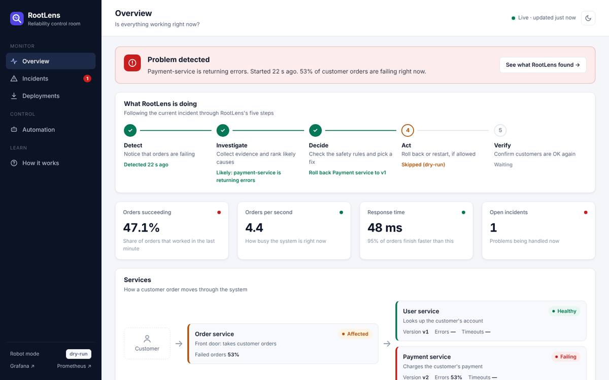
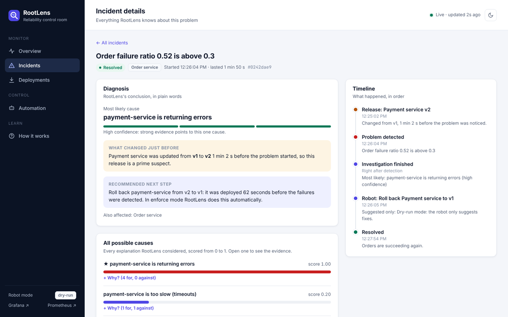
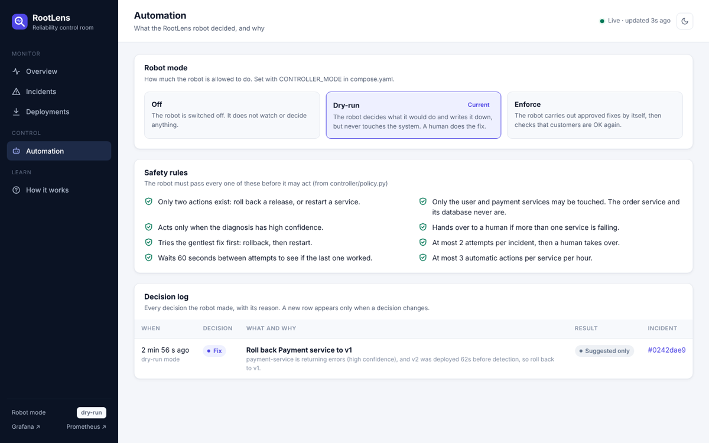
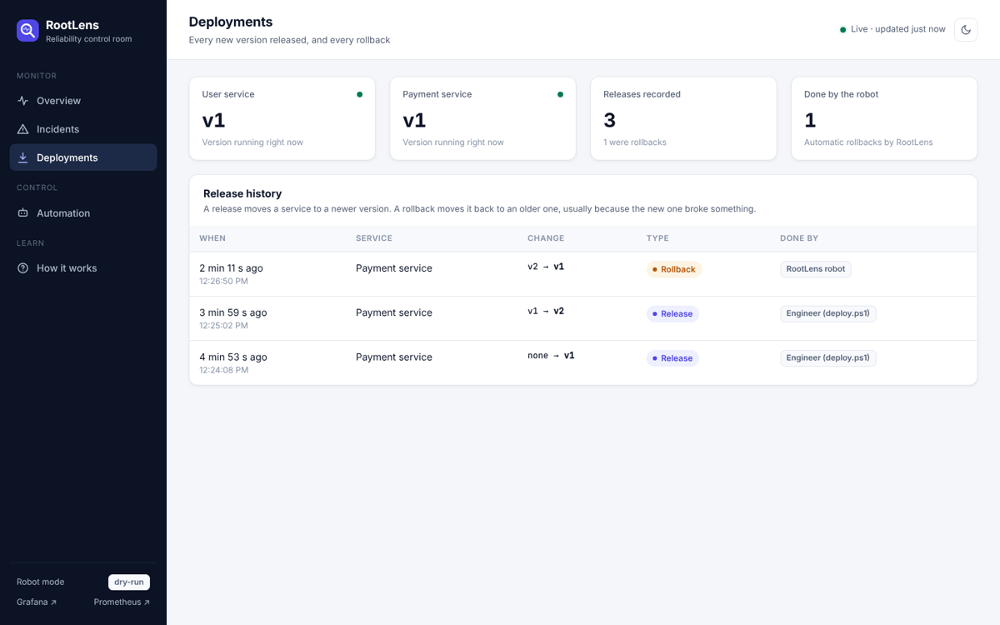
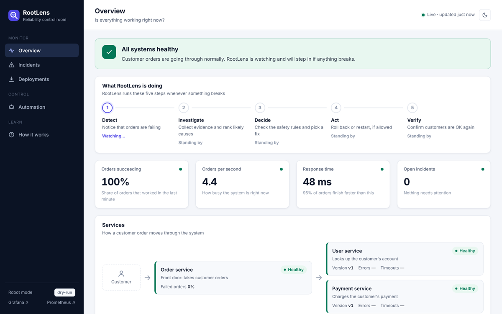

🔎 RootLens · deep dive
RootLens
The complete deep dive · interview prep
Something broke.Why , and is it safe to fix?
Python FastAPI Prometheus Grafana OpenTelemetry Jaeger Docker SQLite
what I used → why I used it → how it's asked
ROADMAP
What we'll cover
1
The problem & the 5-step loop
2
The lab: a shop with planted bugs
3
Architecture & observability
4
Detect : thresholds, hysteresis
5
Investigate : ranking causes
9
A real incident, end to end
THE PROBLEM
Three in the morning, the pager goes off
03:00 · illustrative
📟
orders failing
the questions
which service?what changed?
↩️
Usual fix: roll back the recent release , then watch the graphs
⏱️
Every minute of diagnosis is a minute of customer-facing errors
🤖
RootLens: the same routine, written down as code
WHY IT MATTERS
Time to recover is what customers feel
notice
understand
fix + confirm
🔎 detector
🧠 investigator
🤖 controller
mean time to recovery · M T T R
1m 50s
real run: detection → rollback → three healthy checkspayment-service v2, a planted 50% error bug
THE BIG IDEA
Detect → Investigate → Decide → Act → Verify
🔎 Detectis it broken?
🧠 Investigatewhy?
📘 Decideact · wait ·
🛠️ Actone safe
✅ Verify3 healthy
📜 audit log: every decision, including not acting
THE LAB
Three FastAPI services form a tiny shop
🛒 order-service:8002 · front door
👤 user-service:8001 · who is buying
💳 payment-service:8003 · charge
symptom vs cause
symptom: orders fail payment errors
the service that hurts is not the service that's broken
HOW ORDER CALLS ITS DEPENDENCIES
A 3-second timeout, and three ways to fail
async with httpx.AsyncClient(timeout=3.0 ) as client:
r = await client.post(payment_url)
except TimeoutException :
FAILURES.labels(dependency, "timeout" ).inc()
return 504
except HTTPError :
FAILURES.labels(dependency, "unreachable" ).inc()
return 503
⏳
timeout · no answer in 3 s → 504
🔌
unreachable · can't connect → 503
💥
error · answered 5xx → 503
one counter, two labels
dependency_failures{dependency , kind }
BREAKING THINGS ON PURPOSE
Chaos switches and planted release bugs
# chaos switches (any service)
POST /chaos/errors?rate=0.5
POST /chaos/latency?seconds=4
POST /chaos/reset
# planted release bugs
BUGS = {"v2" : {"error_rate" : 0.5 }}
👤 user-service v2+4 s latency → beyond the 3 s timeout
💳 payment-service v2fails 50% of requests
🐢 slow dependency 💥 bad release
TRAFFIC AND RELEASES
Fake customers, and a real release record
🧑🤝🧑 traffic.py≈5 orders / s
1
update .env : PAYMENT_SERVICE_VERSION=v2
2
recreate only that container
3
wait for /version to report v2
4
POST /deployments : service · version · previous
no release record → nobody can answer "what changed?"
ARCHITECTURE
Eight containers, one Docker Compose file
🛒👤💳 3 servicesFastAPI · /metrics
📈 Prometheusscrape every 5 s
📊 Grafana:3000
🧵 JaegerOpenTelemetry traces
🔎 detectorpolls Prometheus · opens incidents
🤖 controllerdecide · act · verify
🗂️ order-service also hostsincidents API · investigator · dashboard
🐘 SQLite/data/incidents.db · volume
DESIGN DECISION
Why separate processes?
🧯
Failure isolation · the watcher survives what it watches
🔐
Least privilege · only the controller can change things
🧩
One job each · notice ≠ explain ≠ act
☸️
Controller pattern · observe → reconcile
who may do what
🔎 detectorreads metrics · writes incidents reads evidence · ranks causes the only one that acts
THE DATA
Three tables in SQLite
incidents
idevidence_json
deployments
serviceprevious_version
audit_log
incident_idoutcome
single node · tiny write rate · zero setup → SQLite many writers → Postgres
OBSERVABILITY · METRICS
Counters and histograms
# GET /metrics
rootlens_order_requests_total{
endpoint="/orders" , status="503" } 1342
rootlens_order_request_duration_seconds_bucket{
le="0.5" } 9120
rootlens_order_request_duration_seconds_bucket{
le="3.0" } 9874
📈
Counter · only goes up · read its rate
🪣
Histogram · latency buckets → percentiles
⚠️
Low cardinality labels · status ✓ · user id ✗
OBSERVABILITY · PROMETHEUS
Prometheus pulls every 5 seconds
📈 Prometheusscrape_interval: 5s
👤 userup = 1
🛒 orderup = 1
💳 paymentup = 0 ✗
pull vs push
pull · long-running servicesa missing target is visible push · short-lived jobse.g. batch jobs via a gateway
THE ONE QUERY THAT MATTERS
Failure ratio = 5xx rate ÷ all-requests rate
sum (rate (rootlens_order_requests_total{endpoint="/orders" , status=~"5.." }[1m ]))
÷
sum (rate (rootlens_order_requests_total{endpoint="/orders" }[1m ]))
🔴
numerator : failed orders / second
⚪
denominator : all orders / second
why a ratio?
a count scales with traffic · a ratio doesn't
LATENCY
The 95th percentile, not the average
histogram_quantile (0.95 , sum by (le) (
rate (rootlens_order_request_duration_seconds_bucket{endpoint="/orders" }[1m ])))
😌
average ≈ 0.5 s · looks fine
😣
p95 ≈ 4 s · every 10th customer waits
OBSERVABILITY · TRACES
Follow one order across every service
one trace · illustrative
POST /orders · 4.2 s
GET user-service /users/7 · 4.0 s ⚠
payment · 0.1 s →
🧵
traceparent header carries the trace id
🔇
excluded: /metrics, /health, /version
OBSERVABILITY
Metrics, traces, logs: who answers what
📈
Metrics
is something wrong?
🧵
Traces
where is the time going?
📄
Logs
what exactly happened?roadmap: centralized
RootLens: metrics → detect + diagnose · traces → human confirms
STEP 1 · DETECT
Every 10 seconds: one question
while True :
value = query_number(QUERY)
breaches = breaches + 1 if value >= 0.3 else 0
oks = oks + 1 if value < 0.1 else 0
if breaches >= 3 : open_incident()
if oks >= 3 : resolve_incident()
time.sleep(10 )
3 in a row ≥ 0.3 → OPEN
3 in a row < 0.1 → RESOLVE
time to detect
≈30 s of checks + up to 1 min window
STEP 1 · DETECT
Why two thresholds? Hysteresis
0.3 0.1 failure ratio · illustrative
🔁
one threshold → flapping
🟨
dead zone 0.1–0.3 → stays put
STEP 1 · DETECT
Snapshot the evidence the moment it opens
{ "dependencies" : {
"payment-service" : {
"up" : 1 ,
"own_error_ratio" : 0.51 ,
"failure_rates_per_second" : {"error" : 2.4 , "timeout" : 0 } } },
"order_p95_latency_seconds" : 0.21 ,
"recent_deployments" : [{ "service" : "payment-service" ,
"version" : "v2" , "previous_version" : "v1" ,
"seconds_before_detection" : 62 }] }
🩺
per dependency: up · own errors · how calls failed
⏱️
order status rates + p95
🚀
deployments in the last 30 min
🔁
stored as JSON → reproducible
illustrative values, shaped like the real run
STEP 1 · DETECT
One problem, one incident
breach × 3t = 30 s
breach × 3 againt = 60 s
fingerprintorder-failure-ratio-high
✅ incident #12opened once
↩️ already openno duplicate
same signal twice = same effect as once → idempotent
STEP 2 · INVESTIGATE
Three possible causes, for every dependency
🔌
is down
up = 0 · can't connect
💥
returning errors
running, but answers 5xx
🐢
too slow
timeouts · p95 near 3 s
2 dependencies × 3 causes = 6 hypotheses, each scored 0 → 1
✓ 4 for ✗ 0 against
a ranked list with reasons, not one guess
STEP 2 · INVESTIGATE
Evidence adds points: 'returning errors'
+
own error ratio ≥ 20%
0.45
+
≥ 80% of failures are error responses
0.15
+
p95 well under the timeout
0.15
payment-service · returning errors
0
hand-tuned weights · every rule unit-tested · explainable
STEP 2 · INVESTIGATE
The other hypotheses lose points
hypothesis for against score 💳 payment · returning errors running · 51% own errors · … none 1.00 💳 payment · down up = 1, it's running 0.00 💳 payment · too slow running few or no timeouts 0.20 👤 user · any no failed calls → not implicated —
1.00 vs 0.20
STEP 2 · INVESTIGATE
High confidence needs a score AND a gap
def _confidence(ranked):
top, second = ranked[0 ], ranked[1 ]
if top >= 0.75 and top - second >= 0.3 :
return "high"
if top >= 0.5 :
return "medium"
return "low"
high score, no gap
0.80 vs 0.80 → coin flip
real run
1.00 vs 0.20 · gap 0.80 → HIGH
STEP 2 · INVESTIGATE
The other bug: user-service v2 is slow
🛒 ordertimeout = 3 s
👤 user v2sleeps 4 s
3 s · gives up
too slow · 1.00 returning errors · low
STEP 2 · INVESTIGATE
Blast radius: who else is hurt?
DEPENDENCY_GRAPH = {
"order-service" : [
"user-service" ,
"payment-service" ] }
💳 payment-serviceroot cause
🛒 order-serviceimpacted
why it matters
who to notify · which alerts are just symptoms
DESIGN DECISION
Why hand-written rules, not ML or an LLM?
📉
No training data · incidents are rare and unique
🗣️
Explainable · "why did you roll back?"
🧪
Testable · pure functions, unit tests
✍️
LLM later: explain , never decide
rule vs model
rule → evidence listed same input, same output hard to audit can be confidently wrong
WHAT CHANGED?
Link the failure to a recent release
→ roll back payment-service from v2 to v1
WHAT CHANGED?
Never roll back twice
time change kind 12:25 payment v1 → v2 release 12:26 payment v2 → v1 rollback 12:28 still failing… roll back again? ✗ no
is_rollback = current < previous # v1 < v2
a rollback can't explain a new failure → human
STEP 3 · DECIDE
The rulebook: a pure function
📥 inputdiagnosis
📘 decide()pure function
🛠️ actrollback · restart
⏸️ waitcooldown
🙋 escalatehand to a human
same input → same output · tested in milliseconds
STEP 3 · DECIDE
Walking the rulebook
🎯
target is user or payment service?
1️⃣
only one service failing?
🔢
< 2 attempts · < 3 actions / service / hour?
⏸️
last attempt < 60 s ago → wait
↩️
recent release to undo → roll back
🔄
else restart not tried → restart
🙋
any "no"
→ escalate to a human
STEP 3 · DECIDE
Three guardrails against a runaway robot
2
attempts / incident
two misses → a third won't help
3
actions / service / hour
no restart loops
60s
cooldown
let metrics catch up
fail safe: when in doubt, stop and ask
STEP 3 · DECIDE
Why rollback first, then restart?
↩️
Rollback
a recent release explains itremoves the cause
🔄
Restart
no recent changeleak · stuck pool · bad state
change explains it → undo · else → restart once · else → human
STEP 4 · ACT
Three modes: off, dry-run, enforce
📝
dry-run
decides + records
default
build trust: weeks of dry-run → compare with humans → enforce
STEP 4 · ACT
Preflight: is it still true right now?
📉
live failure ratio still ≥ 0.3
🔢
target version < bad version
🏷️
bad version is still running
TOCTOU
time of check use
decide on evidence,
STEP 4 · ACT
executor.py: the only code allowed to act
def build_command(action, service):
# a list, never a shell string
if action == "rollback_deployment" :
return ["docker" , "compose" , "up" , "-d" ,
"--no-deps" , "--force-recreate" , service]
if action == "restart_service" :
return ["docker" , "compose" , "restart" , service]
✅
allow list: 2 actions · 2 services
🧱
argument list → no shell injection
🏷️
write version · recreate · wait for /version
📜
record deployment by: robot
STEP 5 · VERIFY
Did the fix actually work?
live failure ratio after rollback · illustrative
✅
3 in a row < 0.1 → recovered
state when recovered 3 OKs in a row pending < 120 s failed still bad → human inconclusive brief dip · no data
honest about uncertainty → a trustworthy audit log
RECORD EVERYTHING
The audit log, including 'did nothing'
time decision outcome 12:26:05 roll back payment-service to v1 suggested · dry-run 12:31:10 escalate: confidence medium needs human 12:40:02 wait: last attempt 20 s ago waiting 12:52:44 refused: live ratio 4%, already recovered no action
❓
post-incident review: "why didn't it act?" → written down
🔁
guardrails count from the log → survive restarts
PEOPLE IN THE LOOP
Telegram notices to the service owner
📱 telegram · illustrative
🚨 payment-service incident #12
✅ resolved after 1 min 50 s
NOTIFY_CHAT_PAYMENT_SERVICE="1234,5678"
NOTIFY_CHAT_DEFAULT="9999"
opened needs_human reminder · 15 min acted fix_failed resolved
🔁
retry after 60 s · never blocks the fix
A REAL INCIDENT
12:25:02 → 12:27:54
time what happened 12:25:02 🚀 payment-service v2 released 12:26:04 🚨 incident opened · failure ratio 0.52 · 62 s after release 12:26:04 🧠 returning errors · 1.00 vs 0.20 · high · strong trigger 12:26:05 📘 decide: roll back to v1 12:26:50 ↩️ rollback to v1 12:27:54 ✅ resolved · total 1 min 50 s
THE DASHBOARD
Something looks wrong → problem detected

1 · something looks wrong

2 · problem detected
THE DASHBOARD
Incident detail and the decision log

3 · incident detail

4 · automation & decision log
THE DASHBOARD
Deployments, and healthy again

5 · deployments

6 · healthy again
TESTING
118 unit tests, no Docker needed
test_investigator test_policy test_safety test_executor test_controller test_notify
def test_escalates_when_two_services_fail():
d = decide(diagnosis_with("payment" , "user" ))
assert d["kind" ] == "escalate"
execute(action, service, runner=fake_runner , probe=fake_probe , recorder=fake_recorder ) # Docker never runs
CONTINUOUS INTEGRATION
Two jobs on every push
🧪 test6 test files · 118 tests
🐳 buildcompose config · build images
📦 releaseghcr.io/hemashreevi/rootlens
docker run --rm -p 10000:10000 ghcr.io/hemashreevi/rootlens:latest
DEPLOYMENT
The full lab: docker compose up
docker compose up -d
docker compose ps # 8 containers
docker compose down -v # ✗ deletes incidents
💾
named volume rootlens-data
⚠️
Docker socket = big permission
☁️
Codespaces : one click, traffic running
DEPLOYMENT
Free hosting gives you one container
one container · demo/run.py supervisor
prometheus user order payment detector traffic controller · enforce
EXECUTOR_RUNTIME=process
# compose → supervisor
# same policy · safety · audit
release train
v2 every ≈20 min ≤ 3 actions / service / hour
HONEST NOTES
What RootLens doesn't do (yet)
🧪
bugs are planted · simulated pipeline on one machine
🔓
write endpoints not authenticated yet
🐳
Docker socket → too much permission
🐢
slow but < 3 s → not detected
ROADMAP
What I'd build next
1
Latency detector · p95 vs a target (SLO)
2
Auth · Postgres · narrower permissions
3
Kubernetes · kubectl rollout undo · central logs
4
LLM explanations grounded in evidence
INTERVIEW · CORE
Questions you will hear
Q · How do you detect an incident?
PromQL failure ratio every 10 s · 3 × ≥ 0.3 opens · 3 × < 0.1 resolves.
Q · Why two thresholds?
Hysteresis: one threshold flaps; the gap keeps the state stable.
Q · How do you find the root cause?
Score 3 causes per dependency · reasons for and against · high = ≥ 0.75 and lead ≥ 0.3.
Q · How do you know what changed?
Every release is recorded · ≤ 5 min before detection = strong link.
INTERVIEW · SAFETY
The questions about trust
Q · How do you stop the robot making it worse?
Pure rulebook · escalate on doubt · 2 attempts · 3/hour · 60 s cooldown · preflight.
Q · Rolled back, still broken?
Verify 3 healthy checks in 120 s · else fix_failed → human · never roll back a rollback.
Q · Why not act from day one?
Dry-run first, compare with humans, then enforce.
Q · How did you test it?
118 unit tests · pure decisions · injected fakes for Docker.
INTERVIEW · DESIGN
Follow-ups that test depth
Q · Ratio, not count?
A count scales with traffic; a ratio means the same at any load.
Q · p95, not average?
Averages hide the tail, and the tail is where timeouts live.
Q · 100 services?
Dependency graph from traces · Postgres · per-service detection · k8s rollouts.
Q · Why not an LLM?
No data · must be explainable and testable · LLM explains, rules decide.
THE PITCH
RootLens in 30 seconds
An incident-response lab that does what an on-call engineer does: detect → investigate → decide → act → verify . PromQL ratio with hysteresis · explainable root-cause scores · change correlation . Pure rulebook · guardrails + preflight · everything audited. Real run: 1 min 50 s to recover · 118 unit tests.
RECAP
Everything, in one screen
📈
Prometheus + OpenTelemetry
🔎
Detector · hysteresis · fingerprints
🧠
Ranked causes with reasons
🚀
What changed? release links
📘
Pure rulebook + guardrails
🛡️
Preflight · executor · verify
📜
Audit log, even inaction